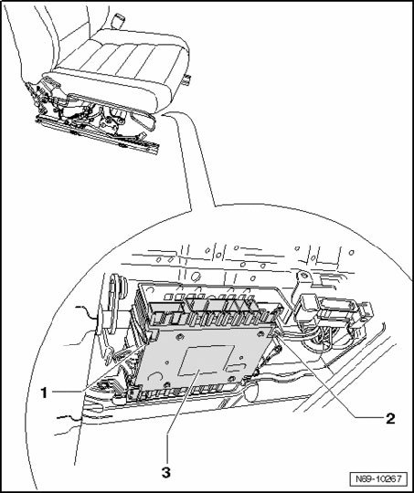
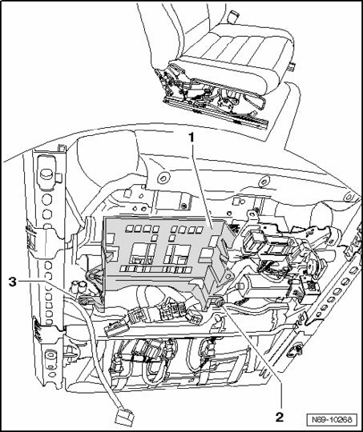
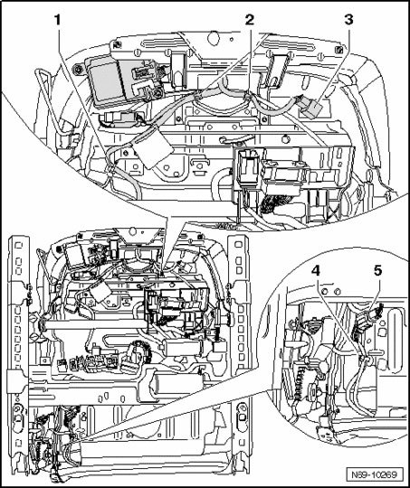
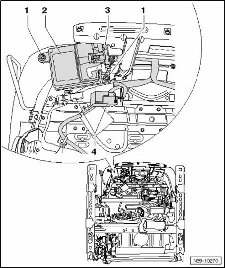
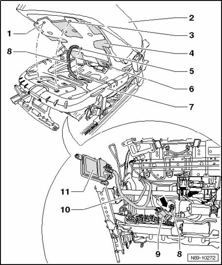

Passenger Occupant Detection System (PODS) (USA Only) Components, Vehicles With Power Seat Adjustment, Removing
Passenger Occupant Detection System (PODS) (USA Only) Components, Vehicles With Power Seat Adjustment, Removing
CAUTION: Observe safety precautions when working on seat occupied recognition.
NOTE:
- Seat cushion, mat for seat occupied recognition, control module and pressure sensor must only be replaced together. Components are complementary and must not be separated!
- Only disconnect wiring harnesses mentioned in the following description!
- Mount the fixture for seat repair VAS 6136 on the engine and transmission holder VAS 6095.
- Perform the following seat adjustment:
- Seat height: highest position
- Seat tilt: highest position
- Remove belt anchor.
- Remove seat rail covers.
- Remove 12-way seat.
- Attach the seat to the fixture for seat repair VAS 6136.
- Remove 12-way seat backrest hinge trim.
- Remove 12-way seat trim.
- Remove side hooks -1- and -2- outward and remove Memory Seat/Steering Column Adjustment Control Module J136 -3-from mounts.

- Separate all connectors from the control module.


- Remove screws -2- (1.5 Nm) and -3- (1.5 Nm) and unclip control module bracket - 1 from seat frame.

- Remove front seat backrest (12-way seat).
- Remove cable ties -2- and -4-.
- Loosen seat occupied recognition connector -3- from seat pan.
- Remove cable bracket -1-.

- Disconnect seat heating connector -5-.

- Remove cover from upholstery of front seat cushion (front seat cushion is not removed).
CAUTION: Connector -3- may not be removed from Seat Occupied Recognition Control Module J706 -2-.
- Disconnect connector -4-.

- Remove two bolts -1- (1.5 Nm).

- Unclip Seat Occupied Recognition Pressure Sensor G452 -2- from bracket without disconnecting connector -1- on it.

- Unclip pressure hose -3- from bracket -4-.

- Lift upholstery of front seat cushion - 62 -, when doing this do not separate upholstery of front seat cushion from mat for seat occupied recognition -4-.
- Remove clips -1-, -3- and -5- from seat frame, clip -6- must not be removed.
CAUTION: The seat cushion -2-, seat occupied recognition mat -4-, pressure hose -8-, Seat Occupied Recognition Pressure Sensor G452 -9- and the Seat Occupied Recognition Control Module J706 -11- must not be disconnected!
- Remove upholstery of front seat cushion -2- together with mat for seat occupied recognition -4-.

- Thread pressure hose -8-, Seat Occupied Recognition Pressure Sensor G452 -9-, Seat Occupied Recognition Control Module J706 -11- and seat wiring harness -10- through opening -arrow- in seat frame -7-.